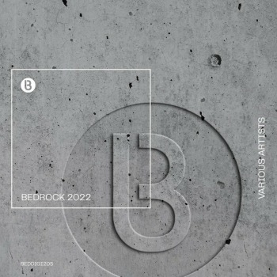
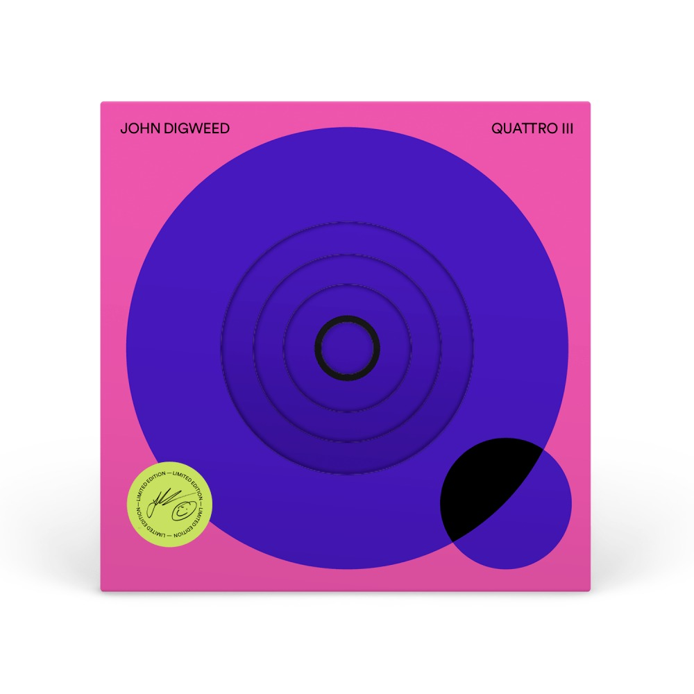

Bedrock Records es un sello discográfico británico fundado en 1999 por John Digweed y Nick Muir. Se ha consolidado como una de las etiquetas más influyentes en la música electrónica, especialmente en los géneros de house progresivo y techno.
John Digweed y Nick Muir son conocidos por su colaboración musical y por su influencia en la escena de la música dance. Digweed, un DJ de renombre, junto con Muir, un productor talentoso, crearon Bedrock Records como una plataforma para lanzar su propia música y la de otros artistas innovadores en el ámbito del house progresivo y techno.
Bedrock Records es conocido por su enfoque en la calidad y la innovación musical. La etiqueta ha lanzado una variedad de géneros dentro de la música electrónica, pero se centra principalmente en:
A lo largo de los años, Bedrock Records ha trabajado con una serie de artistas prominentes en la escena de la música electrónica, incluyendo:
Bedrock Records ha lanzado muchos álbumes y compilaciones influyentes. Algunos de los más notables incluyen:
Además de los lanzamientos discográficos, Bedrock Records también es conocido por organizar eventos y noches de club en diversos lugares alrededor del mundo, incluyendo festivales y sesiones en clubes icónicos como Fabric en Londres.
La influencia de Bedrock Records en la música electrónica es significativa. Han sido pioneros en introducir nuevos talentos y en mantener un estándar de calidad que ha influenciado a muchos otros sellos y artistas en la escena.
Bedrock Records sigue siendo una fuerza influyente en la música electrónica, manteniendo su compromiso con la innovación y la excelencia musical. Bajo la dirección de John Digweed y Nick Muir, el sello continúa evolucionando y adaptándose a las nuevas tendencias, mientras se mantiene fiel a sus raíces en el house progresivo y el techno.
